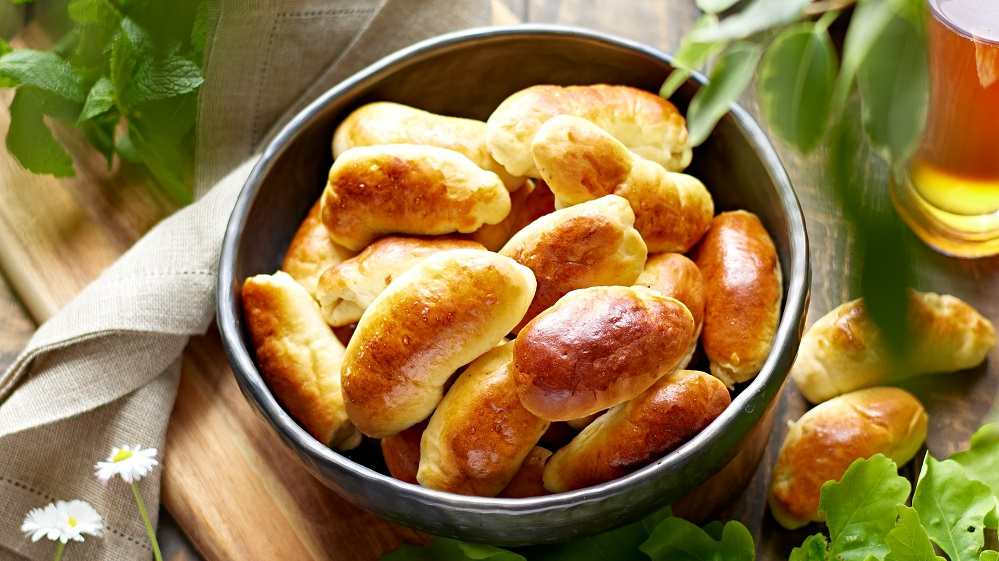

Latvian bacon buns recipe

Description
Latvian bacon buns, known as "Pīrāgi" or "Speķa rauši," are savory pastries filled with bacon and onions. They are a popular and delicious snack or appetizer in Latvia. Latvian bacon buns are a beloved treat for their flaky pastry and savory bacon-onion filling. They are perfect for a snack, party, or as a side dish. Here's a recipe to make Latvian bacon buns:
Ingredients
For the Dough:
- 3 cups all-purpose flour
- 1/2 teaspoon salt
- 1 cup sour cream
- 1/2 cup unsalted butter, softened
- 1 egg
- 1 package (2 1/4 teaspoons) active dry yeast
- 1/4 cup warm water
For the Filling:
- 1 cup bacon, finely chopped
- 1 onion, finely chopped and sautéed until translucent
- Salt and black pepper to taste
Steps
Prepare the Dough:
- In a small bowl, dissolve the yeast in warm water and let it sit for about 5-10 minutes until it becomes frothy.
- In a large mixing bowl, combine the flour and salt.
- In a separate bowl, mix the sour cream, softened butter, and egg.
- Pour the yeast mixture into the sour cream mixture and stir to combine.
- Gradually add the wet ingredients to the flour mixture and knead until the dough is smooth and elastic.
- Cover the dough with a clean cloth and let it rise for about 1-2 hours, or until it has doubled in size.
Prepare the Filling:
- Cook the bacon until it's crispy and finely chop it. Also, sauté the finely chopped onion until it's translucent.
- In a mixing bowl, combine the cooked bacon, sautéed onions, and season with salt and black pepper to taste. Mix well.
Assemble the Bacon Buns:
- Preheat your oven to 350°F (180°C).
- Roll out the risen dough on a floured surface until it's about 1/4 inch thick.
- Cut out circles from the dough using a round cutter or a glass.
- Place a small spoonful of the bacon and onion filling in the center of each dough circle.
- Fold the dough over the filling to create a half-moon shape, then pinch the edges to seal the bun.
Bake the Bacon Buns:
- Place the assembled bacon buns on a baking sheet lined with parchment paper.
- Bake in the preheated oven for about 20-25 minutes, or until they are golden brown and crispy.
Serve:
- Let the bacon buns cool slightly, then serve them as a delightful snack or appetizer. They can be enjoyed warm or at room temperature.